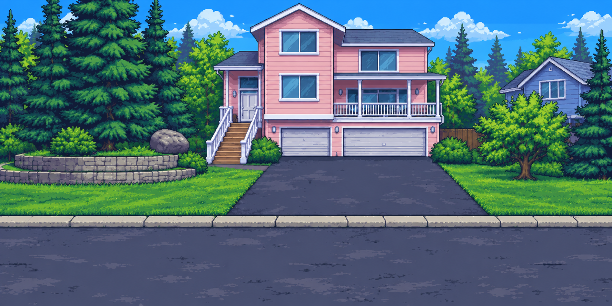
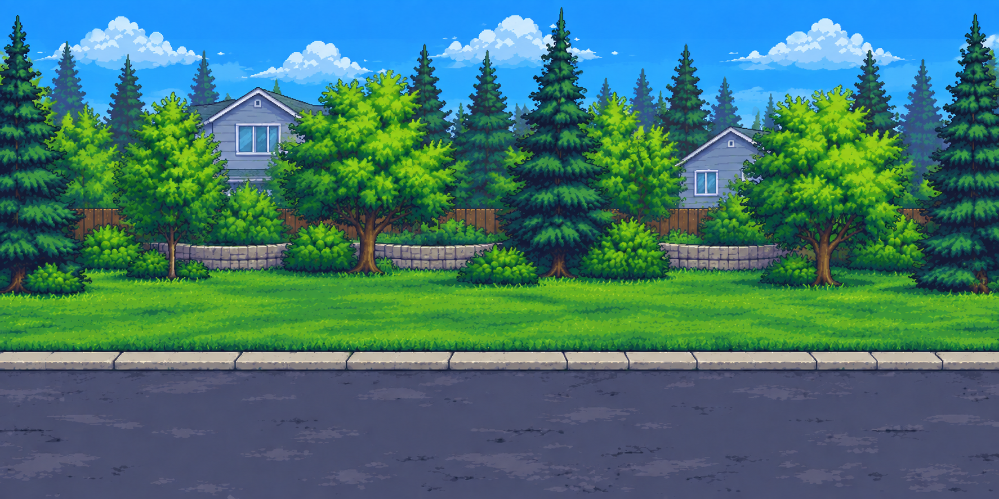
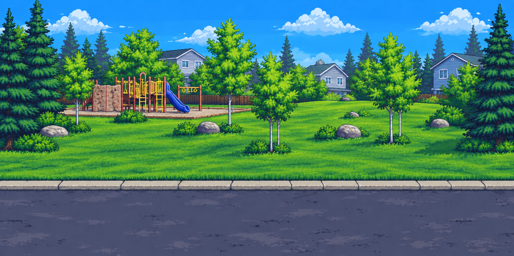

Prototype scenery in intended world proportions. Scroll right from the light-pink house through the connecting street to the park. Baxter's arena occupies the park end. The PNGs are displayed unchanged with point-style scaling; this preview does not represent collision or gameplay.



Review joins at 800 and 1568 pixels. Initial generation has more colors and finer detail than native game pixel art; seams remain under review.